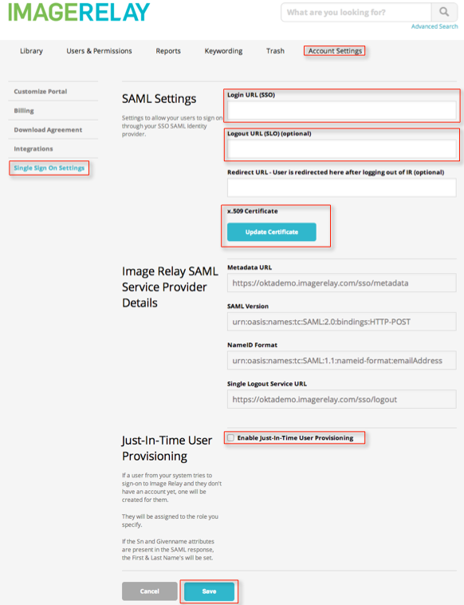
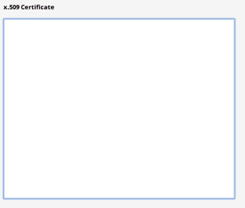

Go to Image Relay at www.imagerelay.com and log in.
Select Account Settings in the top menu, and then select Single Sign On Settings in the menu on the left. The following screen displays.

Copy the following information into the Login URL (SSO) field, shown above.
Sign into the Okta Admin dashboard to generate this value.Copy the following information into the Logout URL (SLO) (optional) field, shown above.
Sign into the Okta Admin dashboard to generate this value.Select the Update Certificate button in the x.509 Certificate field, shown above. The box shown below opens.

Copy and paste the following certificate into the box. Be sure to include the Begin Certificate and End Certificate lines.
Sign into the Okta Admin dashboard to generate this value.
Check Enable Just-in-Time User Provisioning, shown above, if desired.
Select Save.